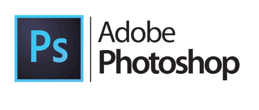
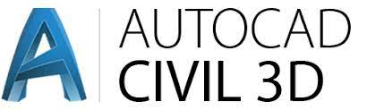

Cursos y Softwares Disponibles
- AutoCAD
- Microsoft Office 365
- Photoshop 
- Illustrator
- CivilCAD 
- Solidworks
AutoCAD 2024 es un software de diseño asistido por computadora (CAD) que permite crear dibujos y modelos 2D y 3D con herramientas avanzadas de precisión y colaboración, optimizando proyectos de ingeniería y arquitectura.
Microsoft Office 365 es una suite de productividad basada en la nube que incluye aplicaciones como Word, Excel, PowerPoint y Outlook, ofreciendo colaboración en tiempo real y almacenamiento en línea.
Photoshop es un software de edición de imágenes y gráficos, desarrollado por Adobe, que permite retocar fotos, crear composiciones digitales y diseñar gráficos complejos con herramientas avanzadas y versátiles.
Adobe Illustrator es un software de diseño gráfico especializado en la creación de gráficos vectoriales, utilizado para ilustraciones, logotipos y diseño digital, ofreciendo herramientas precisas para ilustraciones escalables y detalladas.
CivilCAD es un complemento de AutoCAD especializado en ingeniería civil, que facilita el diseño y análisis de proyectos topográficos, carreteras, alcantarillado y urbanización, automatizando tareas complejas y generando reportes detallados.
SolidWorks es un software de diseño asistido por computadora (CAD) que permite crear modelos 3D detallados, simulaciones y documentación técnica. Es ampliamente usado en ingeniería y diseño industrial.
Más Información
Para más información sobre otros softwares y cursos disponibles, así como para consultar precios, por favor escriba a nuestro correo o escriba a nuestro número de contacto.
Contacto
Correo electrónico: compumundohipermegaresoft@gmail.com
Número de contacto: +54 2954 606605
Servicios
Ofrecemos servicio de instalación remota para todos nuestros softwares (valor adicional).